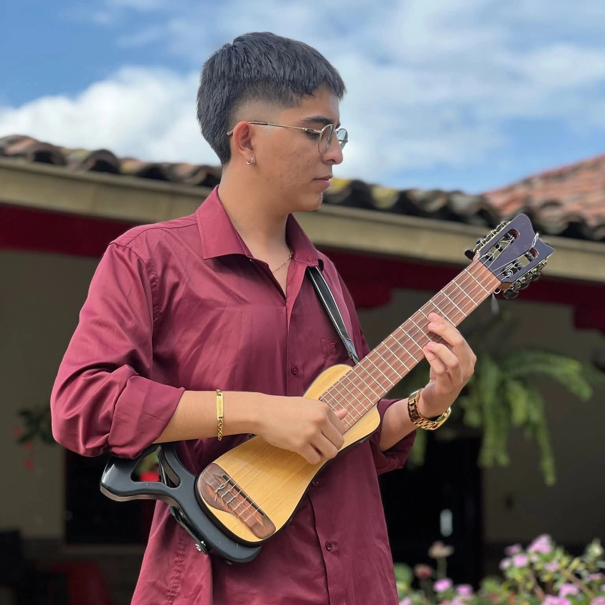
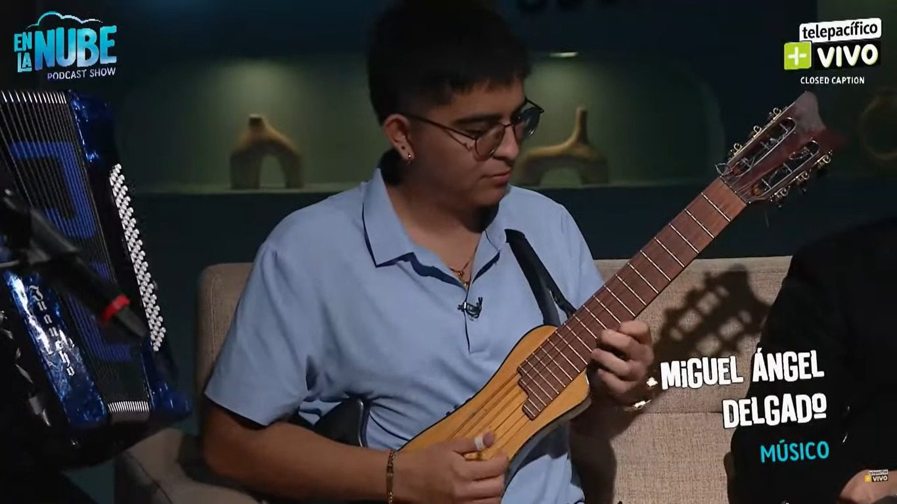

Biografía
Una vida dedicada a la música, con el requinto como esencia y las raíces colombianas como inspiración.

Miguel Ángel Delgado Trejos
Miguel Ángel Delgado Trejos es un músico colombiano, originario de Candelaria, Valle del Cauca. Su historia con la música comenzó desde muy temprana edad, impulsado por el talento, la tradición familiar y una pasión que se ha convertido en el motor de su vida artística.
Nació en el seno de una familia numerosa de músicos. A los 8 años comenzó a aprender guitarra y, a los 9, descubrió en el requinto una de sus mayores pasiones, instrumento que con el tiempo se convertiría en su sello personal. Una de sus grandes inspiraciones ha sido su hermano Carlos, también requintista.
Su formación musical ha estado marcada por la guía de su tío y profesor de música, Publio Guerrero, a quien debe gran parte de los conocimientos que ha adquirido. Él fue quien le enseñó y acompañó en sus primeros pasos, transmitiéndole las bases, la disciplina y el amor por la música que hoy hacen parte de su camino artístico.
Un músico versátil
A lo largo de su trayectoria ha aprendido a interpretar guitarra, requinto, tiple, bandola, bajo y cuatro. Esta versatilidad le permite adaptarse a diferentes estilos y escenarios.
Su repertorio abarca boleros, bambucos, música popular colombiana, música nariñense y música decembrina, entre otros géneros. Aunque disfruta de múltiples estilos, el requinto ocupa un lugar especial en su carrera.
Sus raíces y primeros escenarios
Desde niño participó en eventos culturales de los colegios y, posteriormente, tuvo la oportunidad de representar a la Escuela de Música de Candelaria y a la Casa de la Cultura. En este camino, su tío y profesor de música, Publio Guerrero, ha sido fundamental: gran parte de lo que sabe se lo debe a sus enseñanzas, orientación y acompañamiento. Entre sus experiencias se destaca su participación en el Festival de Música de Cuerda Pedro Ramírez.
Experiencias musicales
Su recorrido musical le ha permitido acompañar en dos ocasiones al maestro Campo Rosero y compartir tarima con agrupaciones del ámbito nariñense como Trío Fronterizo e Ideales de Oriente, entre otros. También ha compartido escenario con Los Hermanos Medina, Cumbia Kalle, Cumbia Arce, Néctar de Colombia, Rossy War, Afrosound y Chico Jaramillo, entre otros artistas y agrupaciones.
En la música popular, ha tenido la oportunidad de compartir su talento con músicos que integran los equipos y agrupaciones que acompañan a artistas de música popular como El Charrito, Luisito Muñoz, Andrés Franco y Fernando Burbano, entre otros. Entre estas experiencias también destaca haber acompañado a Marlon Arena. Actualmente hace parte de la planta musical de El Guaicoso TecnoBomba y participó en el video oficial de la canción El Parrandón.
Su conexión con la música nariñense le ha brindado la oportunidad de seguir creciendo, compartir escenarios y aprender junto a músicos y agrupaciones representativas de este género.
De los escenarios a las redes
En 2024 comenzó a compartir su talento en redes sociales y abrió su canal de YouTube, donde publica versiones y covers que muestran su estilo y habilidad instrumental.
Más allá de los instrumentos y escenarios, Miguel procura conservar la humildad, el amor por su familia, el respeto por sus raíces y la gratitud por cada oportunidad. Para él, la música es una forma de vida: una manera de expresar sentimientos, preservar tradiciones y conectar con las personas.
Una experiencia en Telepacífico
Parte de su camino musical y de las oportunidades que le han permitido compartir su talento.
